Diagnóstico preciso
Um diagnóstico bem-feito não apenas orienta a conduta, mas também aumenta a segurança e a eficácia de todo o processo.
Um cuidado que começa muito antes do tratamento.
Cada consulta começa com escuta atenta, avaliação detalhada e investigação das causas dos sintomas. A partir desse diagnóstico, desenvolvemos um plano individualizado que integra saúde, funcionalidade e estética.
Tecnologias como Ultrassom Doppler e Realidade Aumentada permitem identificar com precisão a origem do problema e direcionar cada decisão clínica com segurança e excelência. Mais do que indicar um procedimento, meu compromisso é construir um plano que respeite sua individualidade e entregue resultados naturais, consistentes e duradouros.
Aqui, o cuidado não termina quando você sai do consultório. Ele continua. Porque transformação duradoura exige constância, ajustes e acompanhamento. E você merece isso.
Como conduzimos o cuidadoQuatro princípios sustentam cada decisão clínica e se repetem em todos os protocolos que desenvolvemos.
Um diagnóstico bem-feito não apenas orienta a conduta, mas também aumenta a segurança e a eficácia de todo o processo.
Cada protocolo é desenvolvido conforme as necessidades clínicas, funcionais e estéticas de cada paciente.
Equipamentos modernos ampliam a capacidade diagnóstica e oferecem mais precisão e conforto durante os procedimentos.
O tratamento continua após cada etapa, com reavaliações e orientações para acompanhar a evolução clínica.
Protocolos próprios e exclusivos
A evolução no cuidado vascular estético
Protocolos desenvolvidos pela Dra. Fernanda Mescolin que unem saúde vascular e beleza natural, sempre com os mesmos princípios: ciência, diagnóstico avançado, plano estratégico, tecnologia integrada, acompanhamento contínuo e resultados que transcendem a estética superficial.
Tratamento integrado para varizes e vasinhos.
Diagnóstico vascular, tecnologias complementares e planejamento individualizado para cuidar da circulação, da pele e da qualidade de vida.
Conhecer protocolo
Protocolo voltado para o lipedema.
Combina estratégias de desinflamação tecidual, melhora da microcirculação, drenagem linfática especializada e tecnologias de remodelação corporal com segurança e conforto.
Conhecer protocolo
Une saúde vascular, firmeza e textura da pele em um só protocolo.
Associa diferentes tecnologias para tratar gordura localizada, celulite, flacidez, qualidade da pele e contorno corporal de forma integrada.
Conhecer protocolo
Protocolo completo para revitalização da pele.
Estímulo de colágeno e rejuvenescimento profundo, mantendo as características naturais da pele.
Consultar indicaçãoTratamento avançado e minimamente invasivo para celulite.
A Dra. Fernanda é expert em GoldIncision®, técnica desenvolvida pelo Dr. Roberto Chacur, indicada para corrigir a celulite de forma eficaz e precisa.
O método combina uma avaliação criteriosa com técnicas específicas que incluem a bioestimulação de colágeno e a liberação dos septos fibrosos responsáveis pelas depressões características da celulite, sempre conforme indicação médica e planejamento individualizado.
Capacitação em GoldIncision® com o Dr. Roberto Chacur, criador da técnica.
Cada paciente passa por avaliação médica detalhada para verificar se existe indicação para utilização da técnica, isoladamente ou associada a outros protocolos.
Além de tratar a causa da celulite, promovendo uma pele mais uniforme, firme e natural, a técnica pode ser associada à harmonização glútea para valorizar ainda mais o resultado.
Cada recurso é utilizado quando houver indicação clínica, sempre como apoio ao diagnóstico e ao tratamento — nunca como um fim em si mesmo.
Precisão e potência para tratar manchas, vasinhos e rejuvenescimento da pele.
Ablação térmica minimamente invasiva para refluxo venoso e varizes calibrosas.
Mapeia o funcionamento da circulação antes de qualquer decisão terapêutica.
Mapeamento vascular em tempo real durante a avaliação e o procedimento.
Radiofrequência microagulhada para estímulo profundo de colágeno.
Conforto e monitorização durante procedimentos realizados em consultório. O paciente permanece consciente e relaxado.
Ultrassom multifocal que trata processos inflamatórios como fibrose, celulite, lipedema e linfedema.
Sua jornada
Cada etapa acontece dentro de um espaço pensado para acolher, diagnosticar e tratar com precisão.
Conhecer você é o primeiro passo. A consulta reúne histórico clínico, exame físico e investigação detalhada dos sintomas.
A combinação entre experiência médica e tecnologias diagnósticas permite compreender a origem de cada alteração.
O tratamento é construído de forma personalizada, respeitando suas necessidades, objetivos e condições clínicas.
Cada procedimento é realizado conforme indicação médica, utilizando técnicas e tecnologias apropriadas para cada caso.
A evolução é acompanhada por meio de retornos programados, orientações individualizadas e reavaliações quando indicadas.
Conheça a Dra. Fernanda
A Dra. Fernanda Mescolin atua em Cirurgia Vascular e Endovascular com uma abordagem que integra ciência, tecnologia e cuidado individualizado.
Seu trabalho é voltado ao tratamento de varizes, lipedema, flacidez, harmonização glútea e celulite, oferecendo soluções modernas para quem busca mais saúde, beleza, funcionalidade e resultados naturais. Com atuação voltada à Dermatoflebologia, área que une saúde vascular, qualidade da pele e estética, desenvolve tratamentos personalizados baseados em diagnóstico preciso e tecnologia avançada.
Seu compromisso é oferecer resultados eficazes, seguros e duradouros, respeitando a individualidade de cada paciente e promovendo uma transformação que vai além da estética.
Conheça sua trajetóriaDúvidas frequentes
Quem já passou por aqui
Toque em um depoimento para ler
{{ c.short }}
{{ c.full }}
{{ c.name }}
Antes de indicar qualquer procedimento, é essencial compreender a origem dos seus sintomas, avaliar sua circulação e entender as características do seu caso. É a partir dessa avaliação que construímos um plano de tratamento individualizado, seguro e baseado em evidências.
Agende sua consulta e descubra a abordagem mais adequada para a sua saúde, o seu corpo e os seus objetivos.